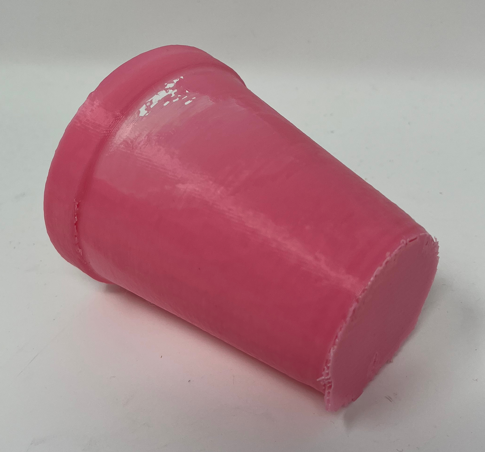
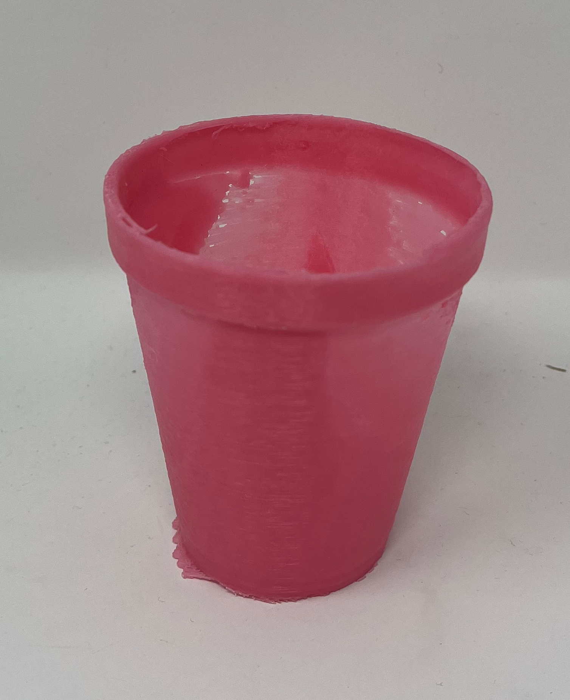
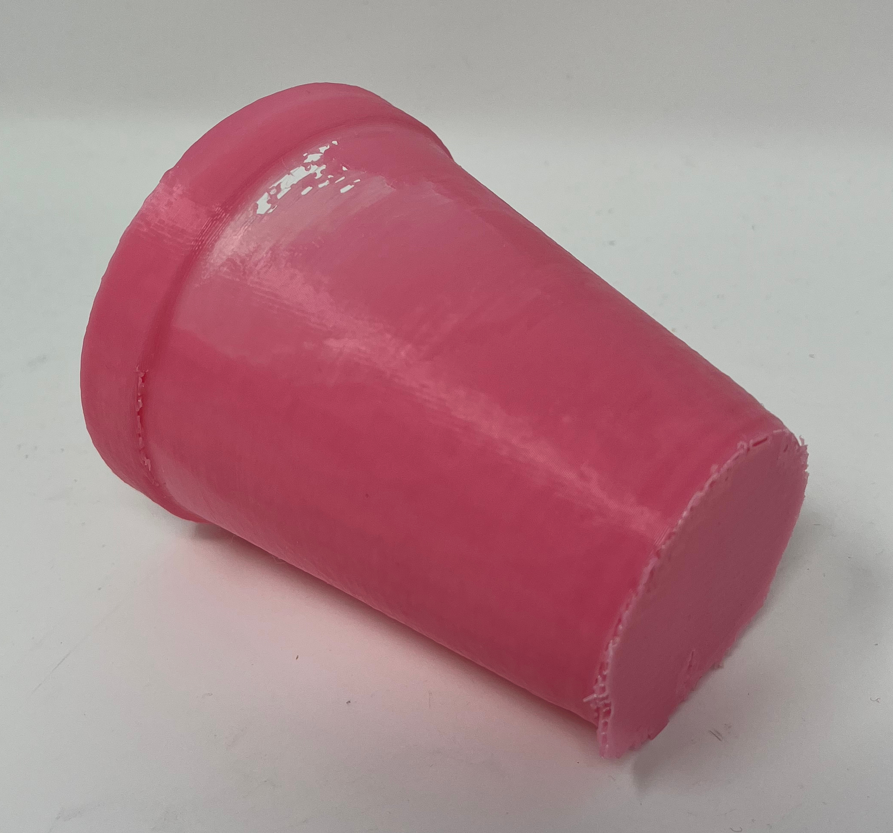
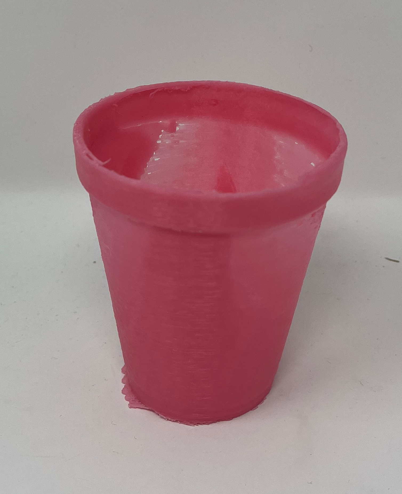

This weeks assignment was to design something in Fusion 360, print it, and also kind of create a scan of something in 3D. I decided to mesh both ideas. So what I did first was to scan something of the assignment, while for me I decided to scan a cup with a small like test 3D cube component. The program used to scan my cup was called Sense. So when I went to scan it scanned the object, but it had to be still. I used a rotating platform to scan the object without needing to move the camera. Thankfully the cup was a good scannable object because it was not that reflective so the scanner did a fairly good job scanning the object.
These what were the original cups look like with the component inside the lightbox. I then decided to scan it using sense and this is how it came out.
 




These images include the final 3D printed result for my actual component. 3D printing was done using the Prusa Slicer to convert my .ply model into an STL file, and when I can use the slicer to select a side to build on. Once I did that, I was able to easily port it over to a 3D printer and it printed without a hitch in a day. The cup ended up with some holes but it works in the end.
I have included links to my files as well